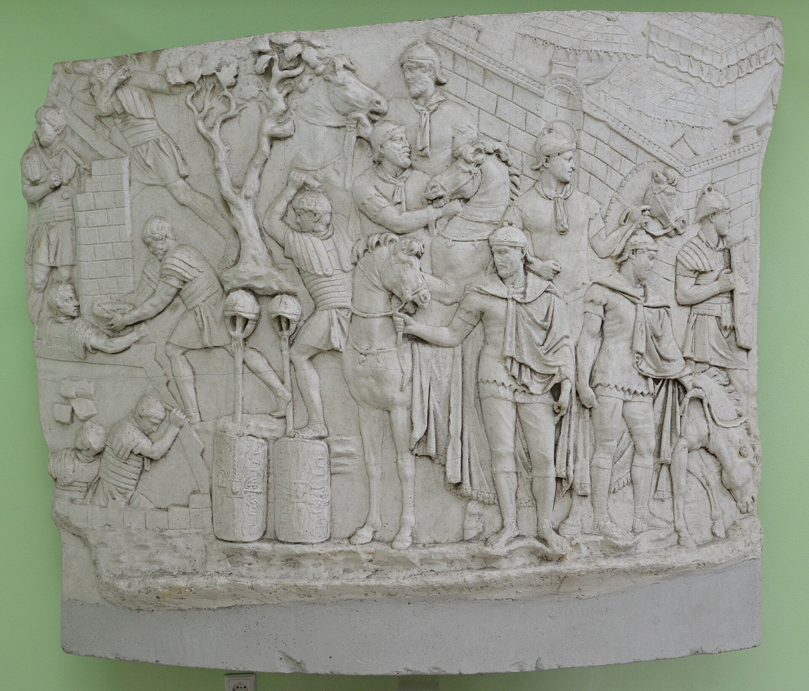
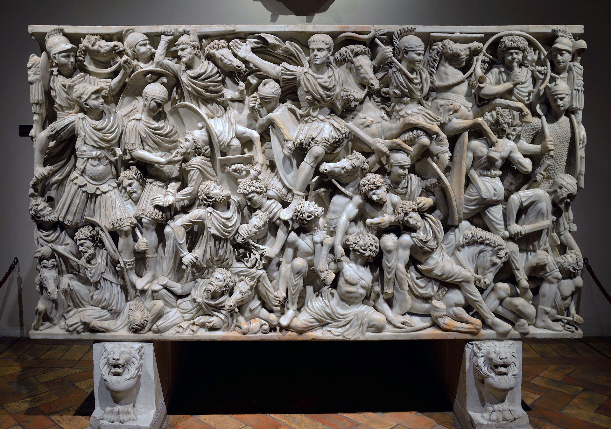

Aurelius Diza
Auxiliary Cavalry Trooper · Danube Frontier


You are a provincial non-citizen (at least by origin — technically, the Constitutio Antoniniana of 212 AD granted citizenship to nearly all free inhabitants of the empire, but in practice, the distinction between "old" citizens and newly enfranchised provincials persisted). You are Syrian, from a city famous for its great temple of the sun god Elagabalus. You enlisted in an auxiliary cavalry unit — the Ala I Ulpia Contariorum, a lance-armed cavalry regiment — at eighteen, and were posted to the Danube frontier, thousands of miles from home.

The Crisis of the Third Century. You were born into the most unstable period of Roman history. Between 235 and 284 AD, the empire had over twenty-five emperors, most of whom died violently. Barbarian incursions, civil wars, plague, and economic collapse tore the empire apart. During your lifetime, the empire fragmented into three competing states: the Gallic Empire in the west, the Palmyrene Empire in the east (which included your Syrian homeland), and the rump Roman Empire in the center.
Military life on the Danube. Your unit was stationed at Intercisa (modern Dunaújváros, Hungary), a fort on the middle Danube in the province of Pannonia Inferior. The fort's garrison was heavily Syrian — archaeological evidence shows that communities of Syrian soldiers and their families maintained eastern religious practices and even Syrian architectural styles on the Danube. You worshipped Sol Invictus, Elagabal, and Mithras (whose mysteries were enormously popular in the Roman military). You ate lentils and flatbread when you could get them, rather than the standard military wheat porridge.

Gothic invasions. In 250–251 AD, when you were around seventeen, the Gothic king Cniva invaded the Balkans and defeated the emperor Decius at the Battle of Abritus — the first time a Roman emperor was killed in battle against a foreign enemy. The Danube frontier was in chaos. By the time you enlisted in 251, the army was desperately short of men. Training was abbreviated. You were sent to Intercisa and spent the next fifteen years in an endless cycle of frontier patrol, skirmish, fort repair, and occasional pitched battle against Gothic, Sarmatian, and Quadic raiding parties.

Economic collapse. Your pay, nominally in debased silver coins (the antoninianus), was nearly worthless. The silver content of Roman coinage had plummeted from roughly 90% under Augustus to under 5% by the 260s. Hyperinflation destroyed what remained of the monetary economy. The army was increasingly paid in kind — rations, equipment, donatives in gold. Civilian trade shrank. The nearby town of Intercisa, once a thriving canabae, was impoverished.

Personal life. You married a local Pannonian woman named Aurelia Avita around age twenty-two. The marriage was legal; the Severan reforms had lifted the old marriage ban for soldiers. You had a son, named Aurelius Mokimos (a Syrian name — you insisted), and a daughter. Your son would grow up speaking a mix of Latin, Pannonian Celtic, and a few words of Aramaic learned from you.
The Palmyrene secession and Gallienus. In 260, the emperor Valerian was captured by the Sasanian Persians — the first Roman emperor taken prisoner. The empire fractured. Odaenathus and then Zenobia, rulers of Palmyra, seized control of the eastern provinces, including your homeland. You were cut off from Syria. Under Gallienus (sole emperor 260–268), the central empire fought on all fronts simultaneously. Your unit was redeployed repeatedly — to Naissus (Niš) in 268 to fight a massive Gothic invasion.

Death. At the Battle of Naissus in 268, the emperor Claudius II inflicted a decisive defeat on the Goths — one of the turning points that began the empire's recovery. You fought in the battle. Whether you died in the fighting itself or from the plague that swept the army immediately after (possibly the same epidemic that killed Claudius II two years later), your death came at roughly thirty-five. Your name may survive on a tombstone at Intercisa — the site has yielded hundreds of auxiliary epitaphs.
What shaped this life
The Crisis of the Third Century, the disintegration of the monetary economy, the Gothic invasions, the fragmentation of the empire, the Syrian diaspora communities in the Roman military, and the sheer lethality of army service in a period when the average emperor survived roughly three years.
The images above are real museum artifacts and photographs, or commissioned illustrations; full attribution on the credits page.